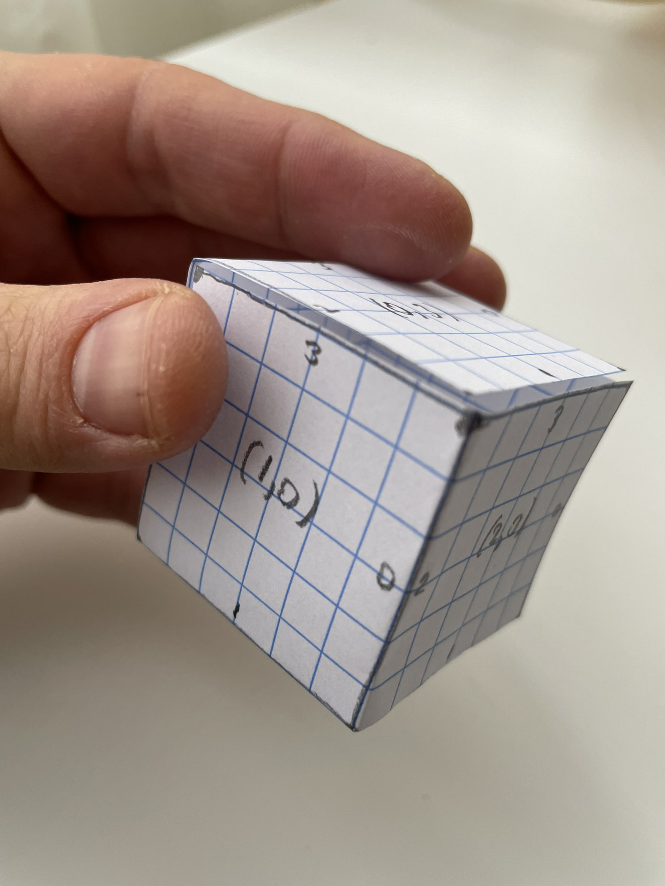

Notes on Advent of Code 2022
I've been having fun solving Advent of Code problems every December for a few years now. Advent of Code is an advent calendar of programming puzzles.
All my solutions are on my GitHub here. First, a quick disclaimer:
Disclaimer on my solutions
I use Python because I find it easiest for this type of coding. I treat solving these as a write-only exercise. I do it for the problem-solving bit, so I don't comment the code & once I find the solution I consider it
done- I don’t revisit and try to optimize even though sometimes I strongly feel like there is a better solution. I don't even share code between part 1 and part 2 - once part 1 is solved, I copy/paste the solution and change it to solve part 2, so each can be run independently. I also rarely use libraries, and when I do it's some standard ones likere,itertools, ormath. The code has no comments and is littered with magic numbers and strange variable names. This is not how I usually code, rather my decadent holiday indulgence. I wasn't thinking I will end up writing a blog post discussing my solutions so I would like to apologize for the code being hard to read.
With that long disclaimer out of the way, let's talk Advent of Code 2022. I figured I'll cover a few problems that seemed interesting to me during this round, before they fade in my memory. The first couple of weeks are usually easy, so I'll start from day 15.
Day 15: Beacon Exclusion Zone
Problem statement is here.
Part 1
Part 1 is pretty easy. We use taxicab geometry and for each sensor, we can find
its scan radius by computing the Manhattan distance between its coordinates and
the closest beacon it sees. Once we have this, we intersect each (taxicab)
circle with the row y=2000000. This gives as a bunch of segments defined by
(x0, x1) pairs.
import re
y, segments = 2000000, set()
for line in open('input').readlines():
m = re.match('Sensor at x=(-?\d+), y=(-?\d+).*x=(-?\d+), y=(-?\d+)$', line)
sx, sy, bx, by = map(int, m.groups())
radius = abs(sx - bx) + abs(sy - by)
if abs(sy - y) <= radius:
segments.add(((sx - (radius - abs(sy - y)),
(sx + (radius - abs(sy - y))))))
We need to figure out where these overlap so we don't double-count so for each pair of segments, if they intersect, we replace them by their union until no segments intersect anymore. Then we simply sum the length of each segment:
def intersect(s1, s2):
return s1[1] >= s2[0] and s2[1] >= s1[0]
def union(s1, s2):
return (min(s1[0], s2[0]), max(s1[1], s2[1]))
done = False
while not done:
done = True
for s1 in segments:
for s2 in segments:
if s1 == s2:
continue
if intersect(s1, s2):
segments.remove(s1)
segments.remove(s2)
segments.add(union(s1, s2))
done = False
break
if not done:
break
print(sum([s[1] - s[0] for s in segments]))
Part 2
Part 2 is more interesting. We need to scan a quite large area (both x and y
between 0 and 4000000). We know that all points except one are covered by at
least one sensor. We start from (0, 0) and scan like this: for each point,
find the first sensor that sees
it (Manhattan distance from sensor <= sensor
radius). If no scanner can see it, we found our point. Otherwise, again relying
on taxicab geometry, we can tell how many additional points to the right
(increasing x) are still in range of this sensor. We move x beyond these
(\(x = x_sensor + radius - abs(y_sensor - y) + 1\)). If x goes beyond
4000000, we reset it to 0 and increment y. This is not blazingly fast, but
does the job in a reasonable amount of time (around 20 seconds on my machine).
import re
sensors = []
for line in open('input').readlines():
m = re.match('Sensor at x=(-?\d+), y=(-?\d+).*x=(-?\d+), y=(-?\d+)$', line)
sx, sy, bx, by = map(int, m.groups())
radius = abs(sx - bx) + abs(sy - by)
sensors.append((sx, sy, radius))
def in_range(x, y):
for sensor in sensors:
if abs(sensor[0] - x) + abs(sensor[1] - y) <= sensor[2]:
return True, sensor
return False, None
x, y = 0, 0
while True:
found, sensor = in_range(x, y)
if not found:
break
x = sensor[0] + sensor[2] - abs(sensor[1] - y) + 1
if x > 4_000_000:
x = 0
y += 1
print(x * 4_000_000 + y)
Day 16: Proboscidea Volcanium
Problem statement is here.
Part 1
Part 1 is again pretty easy: we can model the valves and tunnels as a graph, then use the Floyd-Warshall algorithm to find the distances between each pair of valves:
import re
dist, flows, to_open = {}, {}, set()
for line in open('input').readlines():
m = re.match(
'Valve (\w+) has flow rate=(\d+); tunnels? leads? to valves? (.*)$', line)
src, flow, *dst = m.groups()
dst = [d.strip() for d in dst[0].split(',')]
dist[src] = {d: 1 for d in dst} | {src: 0}
flows[src] = int(flow)
if flows[src] > 0:
to_open.add(src)
for i in dist:
for j in dist:
if j not in dist[i]:
dist[i][j] = 1000
for k in dist:
for i in dist:
for j in dist:
if dist[i][j] > dist[i][k] + dist[k][j]:
dist[i][j] = dist[i][k] + dist[k][j]
We can then search for the best solution recursively: we start from AA and
keep track of which valves we opened (none for starters). Then at each step,
pick one of the unopened valves. If we have enough time to reach them, recurse
with updated location and set of opened nodes. We also compute the total
pressure released so far at each step and keep track of the highest value we
found. This gives us the solution.
best = 0
def search(current='AA', opened=set(), time=30, score=0):
global best
score += time * flows[current]
if score >= best:
best = score
for node in to_open - opened:
if time - dist[current][node] - 1 >= 0:
search(node, opened | {node}, time -
dist[current][node] - 1, score)
search()
print(best)
Part 2
Part 2 is more fun. We now have an elephant to help us, which makes it a bit
more complicated. My solution now keeps track of a few more things: which valve
am I headed to and how many more minutes I have to get there; which valve is the
elephant headed to and how many more minutes until it gets there. We both start
at AA with an ETA of 0. Then for each node, if my ETA is 0, I'll be heading
that way. If not, the elephant will be heading there. But since we're dealing
with two ETAs, we need to figure out which of us will reach their destination
first, and recurse to that time.
best = 0
def search(me=('AA', 0), elephant=('AA', 0), opened=set(), time=26, score=0):
global best
if score > best:
best = score
for node in to_open - opened:
me_next, elephant_next, score_next = me, elephant, score
if me[1] == 0:
me_next = (node, dist[me[0]][node] + 1)
score_next += (time - dist[me[0]][node] - 1) * flows[node]
else:
elephant_next = (node, dist[elephant[0]][node] + 1)
score_next += (time - dist[elephant[0]][node] - 1) * flows[node]
dt = min(me_next[1], elephant_next[1])
me_next = (me_next[0], me_next[1] - dt)
elephant_next = (elephant_next[0], elephant_next[1] - dt)
if time - dt >= 0:
search(me_next, elephant_next, opened |
{node}, time - dt, score_next)
search()
print(best)
This works but takes a long time, so I added some caching: since both the elephant and I move around a bunch, we can cache the score for each combination of my destination and ETA, the elephant's destination and ETA, and the time. If at a given minute, both the elephant and I were already in this situation but with a better score, we no longer need to keep searching this branch as we already found a better solution. This prunes enough of the search tree to easily find the answer. Updated search with cache:
best = 0
cache = {}
def search(me=('AA', 0), elephant=('AA', 0), opened=set(), time=26, score=0):
global best
if score > best:
best = score
key = str(me) + str(elephant) + str(time)
if key in cache:
if cache[key] >= score:
return
cache[key] = score
for node in to_open - opened:
me_next, elephant_next, score_next = me, elephant, score
if me[1] == 0:
me_next = (node, dist[me[0]][node] + 1)
score_next += (time - dist[me[0]][node] - 1) * flows[node]
else:
elephant_next = (node, dist[elephant[0]][node] + 1)
score_next += (time - dist[elephant[0]][node] - 1) * flows[node]
dt = min(me_next[1], elephant_next[1])
me_next = (me_next[0], me_next[1] - dt)
elephant_next = (elephant_next[0], elephant_next[1] - dt)
if time - dt >= 0:
search(me_next, elephant_next, opened |
{node}, time - dt, score_next)
search()
print(best)
Day 17: Pyroclastic Flow
Problem statement is here.
Part 1
For part 1 we can simply simulate the falling blocks and find the answer. This gives us some of the building blocks needed for part 2.
jets = open('input').read()
rocks = [{(0, 0), (1, 0), (2, 0), (3, 0)},
{(0, 1), (1, 0), (1, 1), (1, 2), (2, 1)},
{(0, 0), (1, 0), (2, 0), (2, 1), (2, 2)},
{(0, 0), (0, 1), (0, 2), (0, 3)},
{(0, 0), (0, 1), (1, 0), (1, 1)}]
grid = set({(i, 0) for i in range(1, 8)})
def intersects(rock, grid):
for block in rock:
if block in grid or block[0] <= 0 or block[0] >= 8:
return True
return False
def move(rock, dx, dy):
return {(i + dx, j + dy) for i, j in rock}
rock_i, jet_i = 0, 0
for _ in range(2022):
top = max(grid, key=lambda pt: pt[1])[1]
rock = move(rocks[rock_i], 3, top + 4)
while True:
new_pos = move(rock, 1 if jets[jet_i] == '>' else -1, 0)
jet_i += 1
if jet_i == len(jets):
jet_i = 0
if not intersects(new_pos, grid):
rock = new_pos
new_pos = move(rock, 0, -1)
if intersects(new_pos, grid):
break
rock = new_pos
grid |= rock
rock_i += 1
if rock_i == len(rocks):
rock_i = 0
print(max(grid, key=lambda pt: pt[1])[1])
Part 2
Part 2 makes it obvious simulating everything is not an option as we need to
look at a thousand billion rocks. The key here is to find a pattern: we are
bound to end up simulating the same rock and initial move instruction over and
over. If we do and we see the same gain in height between repeats, it means we
found our repeating pattern. We know that starting from this position, we have a
period of length period in which our tower of rocks grows by growth. We
subtract the number of rocks we already simulated from 1000000000000, we divide
by period and multiply by growth. We'll call this delta_top.
We are close to the final answer. The only thing left to do is simulate a few
more steps: 1000000000000 minus the number of rocks we already simulated modulo
period. Now we get the height of the top of the tower we simulated and add
delta_top to it to find the final answer.
def top():
return max(grid, key=lambda pt: pt[1])[1]
rock_i, jet_i = 0, 0
cache, delta_top = {}, 0
i = 0
while i < 10_000:
rock = move(rocks[rock_i], 3, top() + 4)
while True:
new_pos = move(rock, 1 if jets[jet_i] == '>' else -1, 0)
jet_i += 1
if jet_i == len(jets):
jet_i = 0
if not intersects(new_pos, grid):
rock = new_pos
new_pos = move(rock, 0, -1)
if intersects(new_pos, grid):
break
rock = new_pos
grid |= rock
rock_i += 1
if rock_i == len(rocks):
rock_i = 0
i += 1
if not delta_top:
if (rock_i, jet_i) not in cache:
cache[(rock_i, jet_i)] = []
c = cache[(rock_i, jet_i)]
c.append([i, top()])
if len(c) > 2 and c[-1][1] - c[-2][1] == c[-2][1] - c[-3][1]:
period, growth = c[-1][0] - c[-2][0], c[-1][1] - c[-2][1]
delta_top = (1_000_000_000_000 - i) // period * growth
i = 10_000 - (1_000_000_000_000 - i) % period
print(top() + delta_top)
Day 18: Boiling Boulders
Problem statement is here.
Part 1
Part is trivial so I won't discuss it here.
Part 2
Part 2 is also very easy, but I found a really neat solution worth sharing:
since all boulders are within (0, 0, 0) and (20, 20, 20), I look at a grid
encompassing everything ((-1, -1, -1) to (21, 21, 21)) and starting from (-1,
-1, -1), flood fill. We use a queue and at each step we dequeue a triple of
coordinates. If already visited or out of bounds, we ignore it and continue.
Otherwise if it is a boulder, it means we found a new surface area. We mark
these coordinates as visited and enqueue all the neighbors. I like how whenever
we run into a boulder gives us exactly the area we are looking for. The full
solution is:
cubes = [tuple(map(int, l.strip().split(','))) for l in open('input').readlines()]
visited, queue, area = set(), [(-1, -1, -1)], 0
while queue:
(x, y, z) = queue.pop(0)
if (x, y, z) in visited:
continue
if not (-1 <= x <= 22 and -1 <= y <= 22 and -1 <= z <= 22):
continue
if (x, y, z) in cubes:
area += 1
continue
visited.add((x, y, z))
queue.append((x - 1, y, z))
queue.append((x + 1, y, z))
queue.append((x, y - 1, z))
queue.append((x, y + 1, z))
queue.append((x, y, z - 1))
queue.append((x, y, z + 1))
print(area)
Day 19: Not Enough Minerals
Problem statement is here.
I used the same solution for part 1 and part 2: a recursive search where we keep track of the bots and resources we have, and the time. The problem is it takes too long to simulate minute by minute. If we try deciding at each minute whether to build any of the bots we can build or keep collecting resources, then recurse to next minute, we end up with too much combinatorial complexity. My solution instead does something like this: for the current moment in time, for each type of robot, say we want to build that one next - based on costs and available resources, we can calculate how many minutes from now that robot be built. We can then recurse (jump ahead in time) there updating available resources, since we know other robots won't be built until then.
As an additional optimization, we can keep track of how many geodes we collected at each minute and if our current search has fewer geodes, it means we already found a better solution and it is not worth going down this branch. There's probably smarter caching/pruning we can do but this seems to be good enough.
This tames the combinatorial complexity enough to get a reasonable run time and going from simulating 24 minutes in part 1 to simulating 32 minutes for fewer blueprints in part 2 doesn't seem to require changing the algorithm. Both parts take around 2 minutes to run. It can probably be optimize further.
import re
import math
def run(bots, costs, resources, time):
if best[time] > resources[3]:
return
best[time] = resources[3]
if time == 0:
return
for bot_type in range(4):
dt = math.ceil((costs[bot_type][0] - resources[0]) / bots[0])
if bot_type >= 2:
if bots[bot_type - 1] == 0:
continue
dt = max(dt, math.ceil((costs[bot_type][1] -
resources[bot_type - 1]) / bots[bot_type - 1]))
dt = max(dt, 0) + 1
if time < dt:
continue
new_resources = [resources[i] + bots[i] * dt for i in range(4)]
new_resources[0] -= costs[bot_type][0]
if bot_type >= 2:
new_resources[bot_type - 1] -= costs[bot_type][1]
bots[bot_type] += 1
run(bots, costs, new_resources, time - dt)
bots[bot_type] -= 1
score = 1
for line in open('input').readlines()[:3]:
m = re.match(
'.*(\d+) ore.*(\d+) ore.*(\d+) ore and (\d+) clay.*(\d+) ore and (\d+) obsidian', line)
costs = list(map(int, m.groups()))
costs = [[costs[0]], [costs[1]], [
costs[2], costs[3]], [costs[4], costs[5]]]
best = [0] * 33
run([1, 0, 0, 0], costs, [0] * 4, 32)
score *= best[0]
print(score)
Day 20: Grove Positioning System
Problem statement is here.
Day 20 was very easy so I won't cover it here.
Day 21: Monkey Math
Problem statement is here.
Part 1
Another easy one. For part 1, we parse the input in an expression tree (with values at leaf nodes and operators at non-leaf nodes) and we recursively evaluate it from root.
tree = {}
for line in open('input').readlines():
key, value = line.strip().split(': ')
value = value.split(' ')
if len(value) == 1:
value = int(value[0])
tree[key] = value
def get(key):
if isinstance(tree[key], int):
return tree[key]
v1, v2 = get(tree[key][0]), get(tree[key][2])
match tree[key][1]:
case '+': return v1 + v2
case '-': return v1 - v2
case '*': return v1 * v2
case '/': return v1 // v2
print(get('root'))
Part 2
Part 2 effectively makes the root be == and asks us to find the value for the
humn node. For this, we can update our recursive evaluation to either compute
a value or return None if humn is part of the subtree we're trying to
evaluate (so if either left or right subtree evaluates to None, return
None). We add another recursive function solve() which takes a node and an
expected value (we expect the node to end up equal to the value) then we can
recursively solve: evaluate left and right. Depending on which of them returns
None, we recurse down that subtree with an updated expected value. For
example, if we expect left + right to be 10 and we get 5 and None back,
then we recurse down the right subtree, with an expected value of 10 - left.
tree = {}
for line in open('input').readlines():
key, value = line.strip().split(': ')
value = value.split(' ')
if len(value) == 1:
value = int(value[0])
tree[key] = value
def get(key):
if tree[key] == None or isinstance(tree[key], int):
return tree[key]
v1, v2 = get(tree[key][0]), get(tree[key][2])
if v1 == None or v2 == None:
return None
match tree[key][1]:
case '+': return v1 + v2
case '-': return v1 - v2
case '*': return v1 * v2
case '/': return v1 // v2
def solve(key, eq):
if tree[key] == None:
return eq
k1, k2 = tree[key][0], tree[key][2]
v1, v2 = get(k1), get(k2)
if v1 == None:
match tree[key][1]:
case '+': return solve(k1, eq - v2)
case '-': return solve(k1, eq + v2)
case '*': return solve(k1, eq // v2)
case '/': return solve(k1, eq * v2)
if v2 == None:
match tree[key][1]:
case '+': return solve(k2, eq - v1)
case '-': return solve(k2, v1 - eq)
case '*': return solve(k2, eq // v1)
case '/': return solve(k2, v1 // eq)
tree['humn'] = None
tree['root'][1] = '-'
print(solve('root', 0))
Day 22: Monkey Map
Problem statement is here.
Part 1
This one was fun but a bit tedious. Part 1 is very easy, we implement movement with wrap-around and stopping when we hit #.
import re
grid = [line.strip('\n').ljust(150, ' ') for line in open('input').readlines()]
dirs, grid = [m.group() for m in re.finditer('(\d+)|L|R', grid[-1])], grid[:-2]
dirs = [int(d) if str.isdecimal(d) else d for d in dirs]
facing = [(1, 0), (0, 1), (-1, 0), (0, -1)]
x, y, d = grid[0].index('.'), 0, 0
def move(x, y, d):
nx = (x + d[0]) % len(grid[0])
ny = (y + d[1]) % len(grid)
match grid[ny][nx]:
case ' ':
nx, ny = move(nx, ny, d)
return (nx, ny) if grid[ny][nx] != ' ' else (x, y)
case '#': return (x, y)
case '.': return (nx, ny)
for step in dirs:
if isinstance(step, int):
while step > 0:
x, y = move(x, y, facing[d])
step -= 1
elif step == 'L':
d = (d - 1) % 4
else:
d = (d + 1) % 4
print(1000 * (y + 1) + 4 * (x + 1) + d)
Part 2
For part 2, we need to figure out how the various facets connect into a cube and map movement from one face to another. Personally, I made a paper cutout of the input shape, folded it, and used that to figure out the transitions:

The algorithm is pretty easy if the mappings are right. While on the same facet,
we simply move in the direction we are supposed to move. We can encode a facet
as a pair of (region_x, region_y) coordinates where region_x, region_y = x //
50, y // 50. Of course, some pairs of coordinates are not part of any facet of
the cube (e.g. (0, 0)) but that doesn't matter. Using this encoding, we can
tell when a movement gets us outside the current region. When that happens, we
have a helper function which helps figure out where we end up and what is the
new orientation.
import re
grid = [line.strip('\n').ljust(150, ' ') for line in open('input').readlines()]
dirs, grid = [m.group() for m in re.finditer('(\d+)|L|R', grid[-1])], grid[:-2]
dirs = [int(d) if str.isdecimal(d) else d for d in dirs]
size = 50
facing = [(1, 0), (0, 1), (-1, 0), (0, -1)]
connections = {
(1, 0): [(2, 0, 0), (1, 1, 1), (0, 2, 0), (0, 3, 0)],
(2, 0): [(1, 2, 2), (1, 1, 2), (1, 0, 2), (0, 3, 3)],
(1, 1): [(2, 0, 3), (1, 2, 1), (0, 2, 1), (1, 0, 3)],
(0, 2): [(1, 2, 0), (0, 3, 1), (1, 0, 0), (1, 1, 0)],
(1, 2): [(2, 0, 2), (0, 3, 2), (0, 2, 2), (1, 1, 3)],
(0, 3): [(1, 2, 3), (2, 0, 1), (1, 0, 1), (0, 2, 3)],
}
x, y, d = grid[0].index('.'), 0, 0
def move(x, y, d):
nx = x + facing[d][0]
ny = y + facing[d][1]
nd = d
if (x // size, y // size) != (nx // size, ny // size):
nx, ny, nd = switch_region(x, y, d)
match grid[ny][nx]:
case '#': return (x, y, d)
case '.': return (nx, ny, nd)
def switch_region(x, y, d):
nrx, nry, nd = connections[(x // size, y // size)][d]
nx, ny = nrx * size, nry * size
rx, ry = x % size, y % size
if (d, nd) in [(0, 0), (1, 3), (2, 2), (3, 1)]:
return nx + size - rx - 1, ny + ry, nd
if (d, nd) in [(0, 2), (1, 1), (2, 0), (3, 3)]:
return nx + rx, ny + size - ry - 1, nd
if (d, nd) in [(0, 1), (1, 0), (2, 3), (3, 2)]:
return nx + size - ry - 1, ny + size - rx - 1, nd
if (d, nd) in [(0, 3), (1, 2), (2, 1), (3, 0)]:
return nx + ry, ny + rx, nd
for step in dirs:
if isinstance(step, int):
while step > 0:
x, y, d = move(x, y, d)
step -= 1
elif step == 'L':
d = (d - 1) % 4
else:
d = (d + 1) % 4
print(1000 * (y + 1) + 4 * (x + 1) + d)
Day 23: Unstable Diffusion
Problem statement is here.
This is a cellular automaton. In general, when implementing cellular automata,
the trick
is to not change things in place, rather use a new copy for each
generation. I represented the elves as a set of (x, y) coordinates. We can use
set intersection to see if an elf has other elves nearby or whether two elves
would end up moving in the same spot. I won't go into more detail as this was
another pretty easy problem. The code is on my GitHub.
Day 24: Blizzard Basin
Problem statement is here.
Part 1
I liked this one. For both part 1 and part 2, this becomes easy to solve with a couple of interesting observations.
First the blizzards move in a repeating pattern so we can map which squares are
occupied at a given point in time and we know the occupancy repeats every
lcm(height, width) where height and width are the height and width of the
valley. We can compute this many generations and store the occupancy map in a
lookup.
import math
blizzards = []
lines = [line.strip() for line in open('input').readlines()]
for y, line in enumerate(lines):
for x, c in enumerate(line):
if c in '<^>v':
blizzards.append((x, y, c))
maxx, maxy = len(lines[0]) - 1, len(lines) - 1
move = {'<': (-1, 0), '^': (0, -1), '>': (1, 0), 'v': (0, 1)}
def step(blizzards):
new = []
for b in blizzards:
x, y = b[0] + move[b[2]][0], b[1] + move[b[2]][1]
if x == 0: x = maxx - 1
if x == maxx: x = 1
if y == 0: y = maxy - 1
if y == maxy: y = 1
new.append((x, y, b[2]))
return new
def occupancy(blizzards):
return {(x, y) for x, y, c in blizzards}
steps, lcm = {}, math.lcm(maxx - 1, maxy - 1)
for i in range(lcm):
steps[i] = {(x, y) for x, y, _ in blizzards}
blizzards = step(blizzards)
Next, we can do a breadth-first search to find the closest path from one side to
the other. Since a possible move is waiting one, its pretty hard to find bounds
for a depth-first search. On the other hand, at every step the elves can occupy
one of the at most height * width positions. Of course, most of these will be
occupied by blizzards. So for a BFS, we start from the initial position and time
(step 0) and use a queue. We pop the first move and enqueue all possible moves
from this position (taking into account valley bounds and blizzard occupancy)
for the next step. As long as we ensure not to enqueue duplicates, the queue
stays small. Since this is BFS, as soon as the position we dequeue is our
destination, we know this is the earliest we can get there.
def solve():
queue = [(1, 0, 0)]
while True:
x, y, step = queue.pop(0)
for x, y in [(x + m[0], y + m[1]) for m in move.values()] + [(x, y)]:
if (x, y) == (maxx - 1, maxy):
return step + 1
if (x, y) != (1, 0):
if x <= 0 or x >= maxx or y <= 0 or y >= maxy:
continue
if (x, y) in steps[(step + 1) % lcm]:
continue
if (x, y, step + 1) not in queue:
queue.append((x, y, step + 1))
print(solve())
Part 2
The extra trips are no problem since this is very fast. The only changes I had
to make from part 1 to part 2 were modifying solve() to parameterize start,
destination, and initial point in time, then call it 3 times for each trip:
def solve(src, dest, step):
queue = [(src[0], src[1], step)]
while True:
x, y, step = queue.pop(0)
for x, y in [(x + m[0], y + m[1]) for m in move.values()] + [(x, y)]:
if (x, y) == (dest[0], dest[1]):
return step + 1
if (x, y) != (src[0], src[1]):
if x <= 0 or x >= maxx or y <= 0 or y >= maxy:
continue
if (x, y) in steps[(step + 1) % lcm]:
continue
if (x, y, step + 1) not in queue:
queue.append((x, y, step + 1))
trip1 = solve((1, 0), (maxx - 1, maxy), 0)
trip2 = solve((maxx - 1, maxy), (1, 0), trip1)
trip3 = solve((1, 0), (maxx - 1, maxy), trip2)
print(trip3)
Day 25: Full of Hot Air
Problem statement is here.
Another easy one that I won't discuss in detail, we just need to implement conversion from decimal to SNAFU and back:
def to_dec(n):
digits = {'0': 0, '1': 1, '2': 2, '-': -1, '=': -2}
return sum([5 ** i * digits[d] for i, d in enumerate(n[::-1])])
def to_snafu(n):
s = ''
while n:
s = ['0', '1', '2', '=', '-'][n % 5] + s
n = n // 5 + (1 if s[0] in '-=' else 0)
return s
print(to_snafu(sum([to_dec(line.strip()) for line in open('input').readlines()])))
In Advent of Code tradition, day 25 has only 1 part.
This was another very fun set of problems and I am looking forward to Advent of Code 2023.